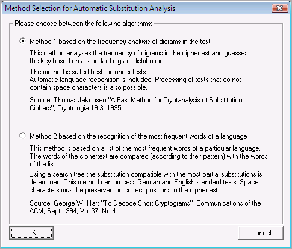
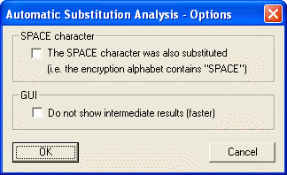
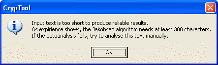
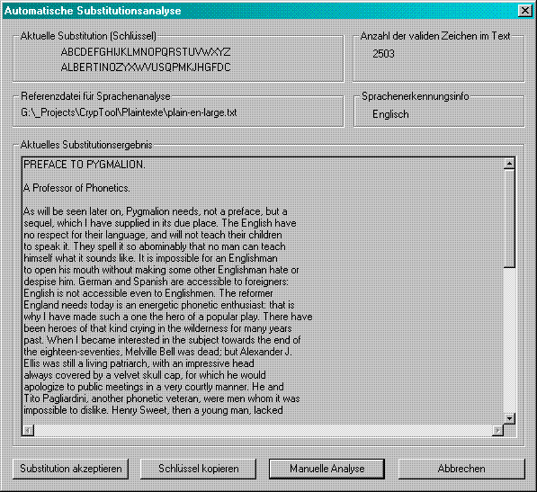

Introduction
Automatic crypt analysis by method 1
Language recognition
Automatic crypt analysis by method 2
Usage
Known constraints
There are two methods for automatic crypt analysis of monoalphabetic substitution ciphers implemented in CrypTool.
The old (and weaker) method (now called method 2) is based on the recognition of the most frequent words of a language and has the following constraints: No automatic language recognition, the need for retaining whitespaces within the ciphertext and no distinction between upper and lower case.
The new implementation (now called method 1) is based on "A Fast Method for the Cryptanalysis of Substitution Ciphers" (Cryptologia 19:3, 1995) by Thomas Jakobsen. Mainly this method was to introduce the following benefits:
The algorithm works on the Latin alphabet mit 26 characters (A to Z). The alphabet can be extended with the whitespace character, so that whitespaces are encrypted just like other characters (each character is mapped on another character). Umlauts, punctuation marks and special characters as well as upper and lower case are retained during encryption, by default.
Furthermore the new implementation was extended with an algorithm for automatic language recognition. The implemented method is based on the "index of coincidence" (according to W. F. Friedman, 1922).
The implemented crypt analysis method determines the frequency distribution of the given text. The frequency distribution of single characters is used to compute the initial value of the key, whereas the frequency distribution of digrams is used to determine the quality of this key. The method is based on a fast algorithm, computing an initial value for the key at the beginning and then improving this key with each iteration.
The increased speed of this method is based on a distribution matrix for digramsy. During key search the frequency of single characters is taken into account.
The computation of the key "quality" is based on a comparison of the digram frequency distribution of the given ciphertext with the frequency distribution of the CrypTool reference text file, which can be found via the menu entry Options \ Text Options. The overall deviation is computed by summing up the deviation of all single digrams. The smaller this deviation is, the "better" is the computed key. In an ideal case there should be no deviation at all. But this is rarely seen in reality, since every text has its own digram frequency distribution differing from the reference distribution. So the strategy of this algorithm is the minimization of the given deviation.
According to the author Thomas Jakobsen, this method is significantly faster than other known methods such as Carroll-Robbins and King-Bahler, and the algorithm is to succeed at a rate of 98% (with ciphertexts of at least 400 characters).
It is easier to decide which language a ciphertext was written in than it is to decrypt this ciphertext without knowing the key. This has already been shown by W. F. Friedman in 1922. The language is determined using the index of coincidence, which is characteristic for a certain language. The index of coincidence is computed using the frequency of single characters in the ciphertext.
But even language recognition does not always lead to accurate results. The reason for this is the statistical spread of character frequencies in different texts that significantly differ from reference texts of a certain language.
This method tries to match the most frequent words of a language to the words within the given ciphertext.
The prerequisite for applying method 2 is, that spaces marks are kept.
First the user can choose between the new (method 1) and the old (method 2) algorithm:

By default the new algorithm (digram analysis) is selected. After choosing the algorithm, an options dialog is shown as follows:

Users can choose if whitespaces belong to the alphabet. Additionally the user can hide the graphical user interface during analysis in order to see the finals result only. The selection of this option leads to an increase of speed, because not each successful decrypted text needs to be printed on the screen.
The following warning appears if the text to be analyzed is too short (less than 300 characters of the alphabet):

The final result is shown in another window. If the graphical user interface was not deactivated earlier, the current computations are shown in the same window. The display is updated each time a "better" key was found, so the crypt analysis can be tracked in a dynamic way.

The user can copy the current substitution key to the internal key storage by clicking the button Copy key.
Furthermore you can try yourself to improve the result of the automatic analysis: By clicking the button Manual analysis you get the dialog for manual analysis for monoalphabetic substitution .
If the user accepts the substitution, a new window is opened containing the decrypted text. The text can then be saved by the user.
The biggest constraint to the aforementioned methods is the length of the ciphertext. Like with all other frequency based methods, the ciphertext has to be sufficient in size to allow the substitution analysis at all. Thus the implemented methods are not suited for the crypt analysis of short ciphertexts. According to the author, best results are achieved when using ciphertexts of 300 to 400 characters or more (98% rate of success), whereas the rate of success for ciphertexts of 100 to 200 characters is between 50% and 80%.